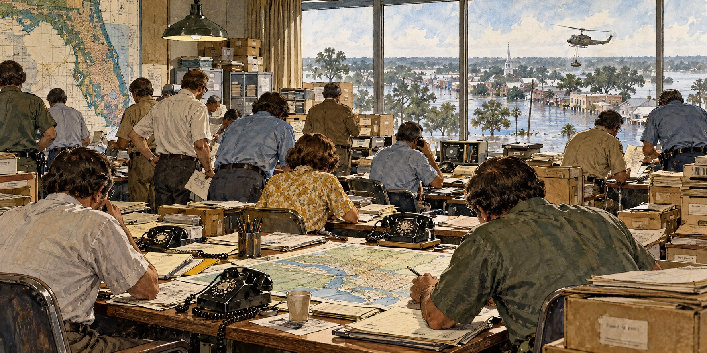

Why FEMA Was Created
How a Century of Disasters Convinced America It Needed One Agency, Not a Hundred

The Federal Emergency Management Agency emerged from decades of piecemeal disaster legislation. Different agencies handled different emergencies, leaving state and local officials to navigate an overlapping federal system. A coordinated agency was intended to make that system easier to use when time mattered most.
Before the Federal Government Helped at All
For most of American history, disaster relief was not seen as a federal job. Before 1950, people affected by a hurricane, flood or tornado relied on family, neighbors and private charity such as the American Red Cross and the Salvation Army. State and local governments held primary responsibility, and federal aid, where it existed, was approved case by case.
The Great Mississippi Flood of 1927, which covered more than a million acres across seven states, marked a turning point and led to major federal legislation. The Dust Bowl of the 1930s reinforced the lesson. Neither produced a single coordinated disaster agency.
A Jumble of More Than a Hundred Agencies
By the 1970s, decades of disaster-by-disaster lawmaking had produced an unworkable patchwork. Federal responses followed Hurricane Carla (1961), the 1964 Alaska earthquake, Hurricane Betsy (1965), Hurricane Camille (1969), the 1971 San Fernando earthquake and Hurricane Agnes (1972). The 1974 Disaster Relief Act strengthened the process for presidential disaster declarations, but each new law added a layer rather than replacing one.
By the late 1970s more than one hundred federal agencies held some piece of disaster responsibility, with overlapping jurisdictions. The Government Accountability Office later documented delays and duplicated effort as results of that fragmentation.
The Governors Demand a Single Agency
The push for consolidation came largely from the states. Governors, often unsure which of dozens of agencies to call during an emergency, organized through the National Governors Association. Its 1978 report, “Comprehensive Emergency Management,” became the blueprint for FEMA, calling for one agency able to handle every type of disaster.
Carter Signs the Order
President Jimmy Carter answered with Presidential Reorganization Plan No. 3 of 1978, merging the government’s civil defense and natural disaster functions. He wanted a structure that, in his words, “would permit more rational decisions on the relative costs and benefits of alternative approaches to disasters.” An executive order activated FEMA on April 1, 1979, folding in the Federal Insurance Administration, the National Fire Prevention and Control Administration, the Federal Disaster Assistance Administration, the Defense Civil Preparedness Agency, the Federal Preparedness Agency and others. That July, Executive Order 12148 moved federal disaster relief operations into the new agency.
Tested Within Days
FEMA had no quiet start. The accident at the Three Mile Island nuclear plant in Pennsylvania overshadowed its launch and exposed how little nuclear emergency planning existed, and Carter directed the new agency to develop a nuclear emergency response plan almost immediately.
An Imperfect Birth
FEMA’s creation did not solve every problem. To avoid congressional opposition, the administration transferred existing staff, appointees and procedures wholesale from the organizations FEMA replaced. Researchers have noted that early FEMA had little power to push states toward reducing risk before disasters, or to arbitrate fairly among competing relief demands. Because local officials kept control of building and zoning codes, the agency could do little about risky coastal development.
Hurricane Andrew in 1992 showed the limits plainly: delays in federal relief drew sharp criticism. FEMA was later folded into the Department of Homeland Security in 2003 and criticized again after Hurricane Katrina in 2005. It remains an institution still evolving.
Quick Facts
| Before 1950 | Relief came from family, neighbors and charities; not a federal duty |
|---|---|
| Turning point | Great Mississippi Flood of 1927 |
| Fragmentation | 100+ federal agencies shared disaster duties by the late 1970s |
| Cost growth | Federal disaster assistance expanded as disasters and responsibilities grew |
| Blueprint | National Governors Association report, 1978 |
| Legal mechanism | Presidential Reorganization Plan No. 3 of 1978 |
| FEMA activated | April 1, 1979, by executive order of President Jimmy Carter |
| Later change | Absorbed into the Department of Homeland Security, 2003 |
Did You Know?
FEMA brought together civil defense and natural-disaster responsibilities in 1979.
More than one hundred federal agencies once shared disaster responsibilities.
The governors, not Washington, drove the push for a single agency.
Vocabulary
Reorganization plan: a presidential proposal to restructure federal agencies, taking effect unless Congress objects.
Executive order: a directive from the President with the force of law within the executive branch.
Mitigation: action taken before a disaster to reduce its damage.
Discussion Questions
Why did disaster relief remain a local matter for so long?
What limits on FEMA’s power were built in at its founding, and how did they show up in Florida?
Related Articles
FLH-0007 — Hurricane Andrew (1992)
FLH-0014 — The Birth of Florida Emergency Management
FLH-0015 — Inside Florida’s Emergency Operations Centers
FLH-0012 — Hurricane Ian (2022)
Sources
Federal Emergency Management Agency. “History of FEMA.” fema.gov
Wikipedia. “Federal Emergency Management Agency.”
Anna Maria College. “History of Emergency Management.” online.annamaria.edu
Fox Weather. “Remembering Jimmy Carter: The President Who Set the Standard for National-Disaster Response.” foxweather.com
The Conversation. “History Shows Why FEMA Is Essential in Disasters.” (quotes Susan L. Cutter). theconversation.com
Hoover Institution. “FEMA After Katrina.” hoover.org
Alt-FEMA Newsletter. “The Creation of FEMA: Historical Context.” altfemanewsletter.substack.com
National Academy of Public Administration. Coping With Catastrophe. 1993.